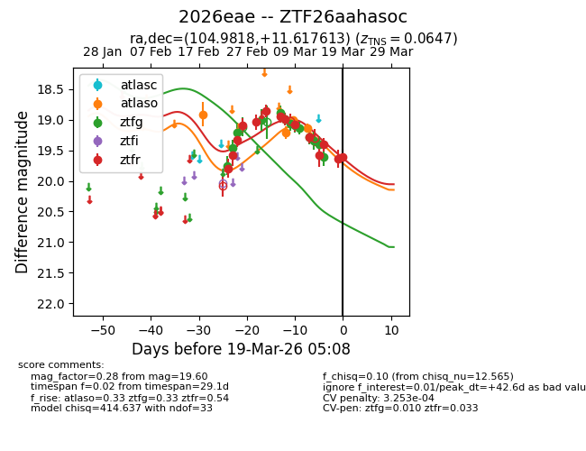
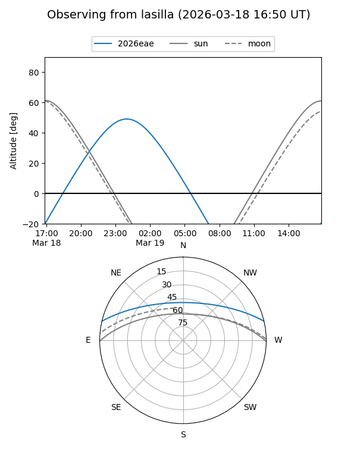
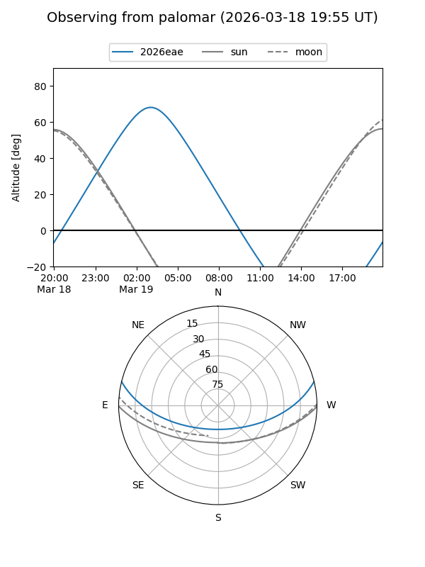
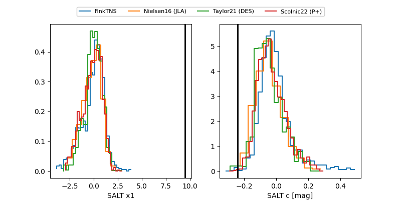

2026eae
Target 2026eae at 2026-03-19 05:10
Aliases and brokers:
FINK: link
Lasair: link
ALeRCE: link
TNS: link
YSE: link
alt names
ZTF26aahasoc (ztf,fink_ztf)
2026eae (tns,yse)
Coordinates:
equatorial (ra, dec) = 104.9818,+11.61761
equatorial (HMS+DMS) = 06:59:55.62,+11:37:03.41
galactic (l, b) = (203.4956,+7.12930)
Flags:
likely cv
Photometry:
last atlaso=19.14, ztfg=19.61, ztfr=19.60
4 atlaso, 13 ztfg, 14 ztfr detections
Lightcurve

Visibility


Additional plots
